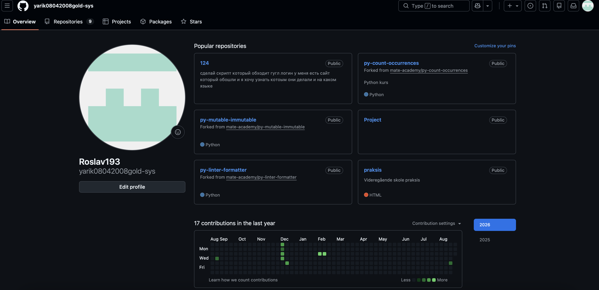
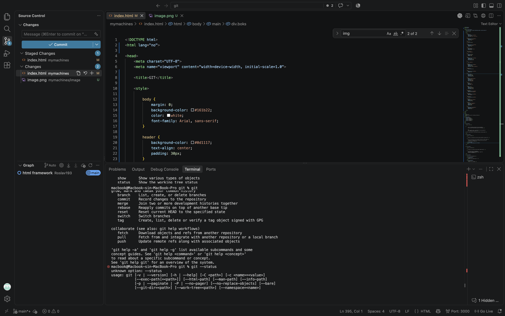

Hva er GIT?
GIT er et verktøy som brukes når man programmerer. Det kan lagre forskjellige versjoner av et prosjekt.
Hvis jeg gjør en feil i prosjektet mitt, kan jeg bruke GIT for å finne en eldre versjon.
GIT er også nyttig når flere personer jobber på samme prosjekt.
Hva er GitHub?
GitHub er en nettside hvor man kan lagre prosjekter som bruker GIT.
Man kan laste opp kode, dele prosjekter med andre og jobbe sammen.
Jeg kan for eksempel lage en nettside på PC-en min og laste prosjektet opp til GitHub.

Hva er GIT Bash?
GIT Bash er en terminal som kan brukes sammen med GIT.
I GIT Bash skriver man kommandoer. Man kan for eksempel gå mellom mapper, lage filer og bruke GIT-kommandoer.
Nyttige Bash-kommandoer
Viser hvilken mappe jeg er i.
Viser filer og mapper.
Brukes for å gå inn i en mappe.
cd prosjekt
Går tilbake én mappe.
Lager en ny mappe.
mkdir nettside
Lager en ny fil.
touch index.html
Rydder teksten i terminalen.
Nyttige GIT-kommandoer
Starter GIT i prosjektet.
Viser hvilke filer som er endret.
Legger til alle endringene.
Lagrer en versjon av prosjektet.
git commit -m "laget startside"
Viser tidligere commits.
Laster ned et prosjekt fra GitHub.
Sender endringene mine til GitHub.
Henter nye endringer fra GitHub.
Bruk av GIT i VS Code
GIT kan brukes direkte i VS Code.
På venstre side i VS Code finnes Source Control. Der kan jeg se hvilke filer jeg har endret.
Jeg kan også skrive en melding og lage en commit.
Det er også mulig å bruke terminalen i VS Code.
For eksempel
git status
git add .
git commit -m "oppdatering"
git push

Hva er en .md-fil?
.md betyr Markdown.
Markdown brukes ofte for å skrive informasjon om et prosjekt.
På GitHub finner man ofte en fil som heter README.md. Der kan man skrive hva prosjektet handler om.
Eksempel på Markdown
# Mitt prosjekt
Dette er mitt prosjekt.
## Programmer
- HTML
- CSS
- JavaScript
kan brukes for overskrift.
kan brukes for punktliste.
Dokumentasjon
Wireframe
Før jeg begynte med siden lagde jeg en enkel wireframe. Den viser hvordan jeg ville plassere innholdet på siden.
Fargepalett
Jeg valgte mørke farger fordi jeg synes det passer bra til GIT og programmering.
#161B22
#F0F6FC
#2F81F7